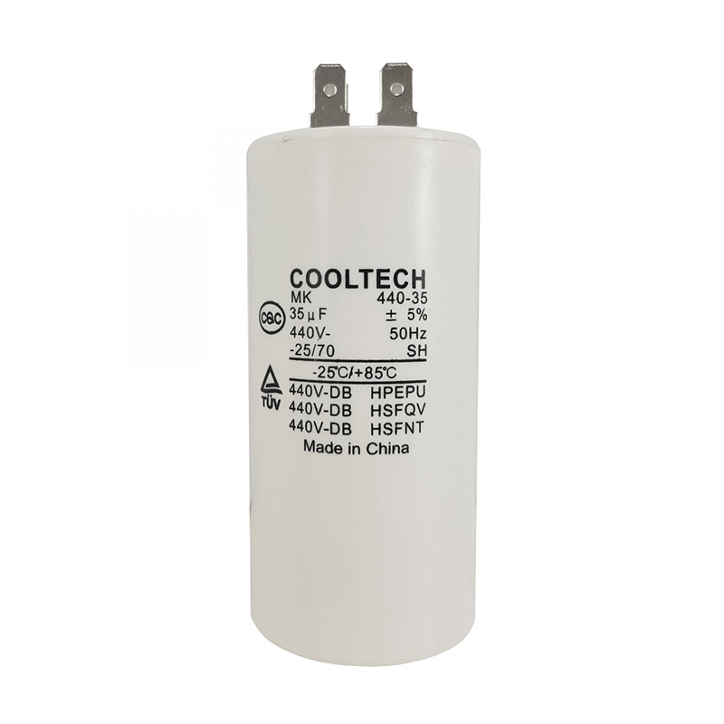
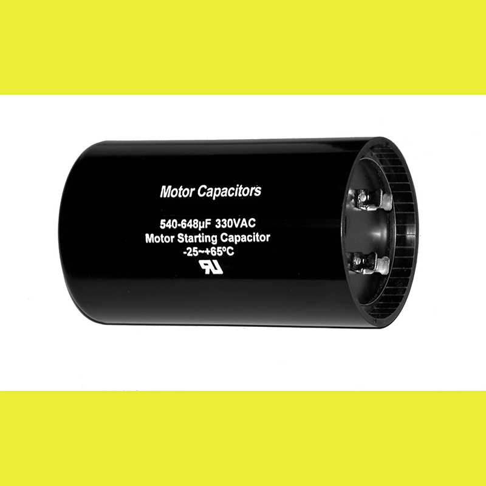

Capacitor Permanente vs Arranque.
Capacitor Permanente (RUN).

Caracterisicas.
Marcha (RUN)
Permanece todo el tiempo conectado en el circuito.
Su capacitancia suele ser menor a 80MFD
Consigo vienen dos factores de capacitancia.
capacitancia y valor relativo:
30MFD(+- 5%)
Por lo general son de color blanco o gris claro.
Capacitor de Arranque (START)

Caracteristicas.
Capacitor seco o electrolitico.
No puede permanecer por mas de 3 segundos conectado en el circuito.
Este rele trabaja con un rele que lo desconecta del circuito.
Se utiliza en los circuitos de aires y refrigeracion.
Factor de capacitancia ronda entre 180 y 350MFD.
Estos capacitores trabajan con un rango de capacitancia muy alta.